Toolkit 0.4.2
UI approval pending. These screens are proposed for your review. Publishing the repair branch does not mark the design approved.
Actual Android emulator screenshots with synthetic files. These show the implemented screens. Personal photos were not used as test data.
Failed media downloads now show a code and report ID with Save error report. Older reports remain available in Transfer settings. Example exported report from a synthetic HTTP 403 failure.
Standard screen
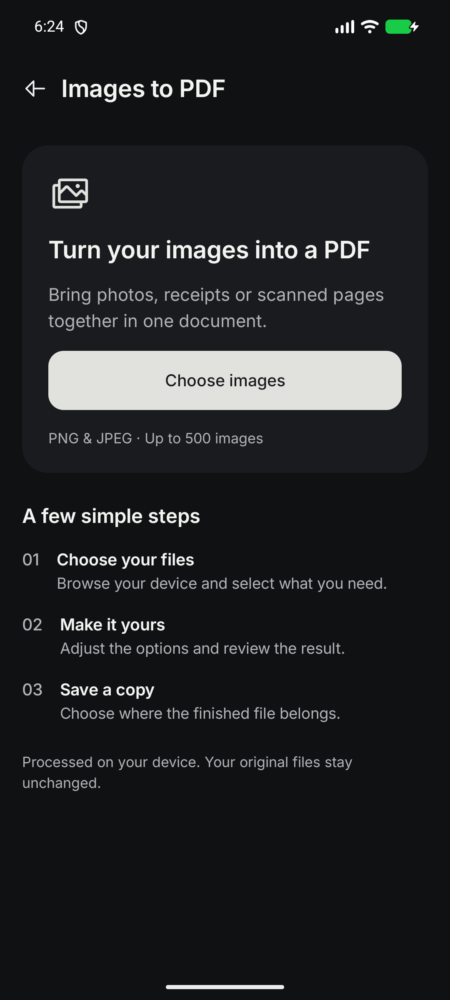
Start with your files
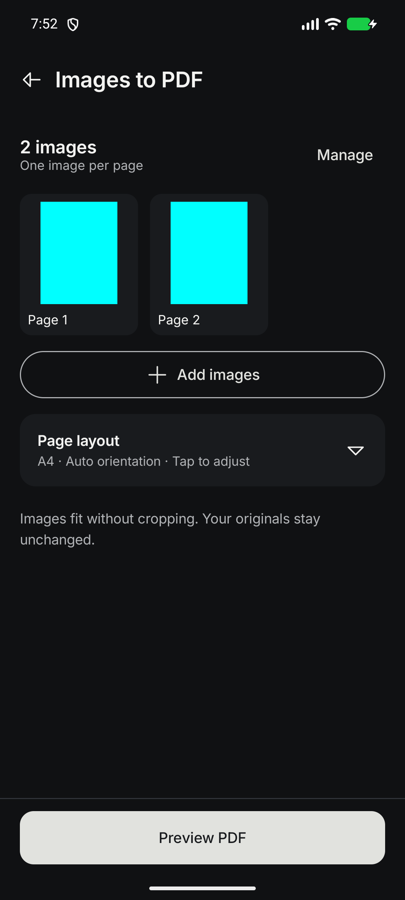
Selected images
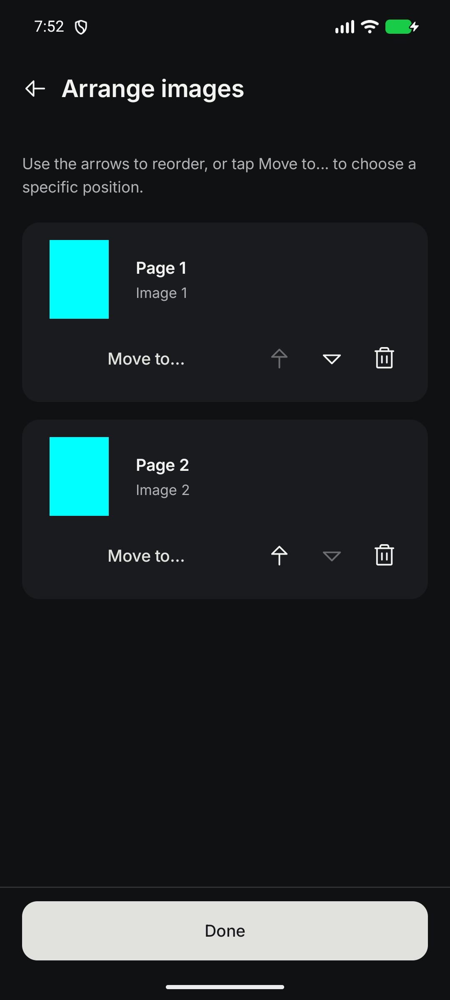
Arrange images
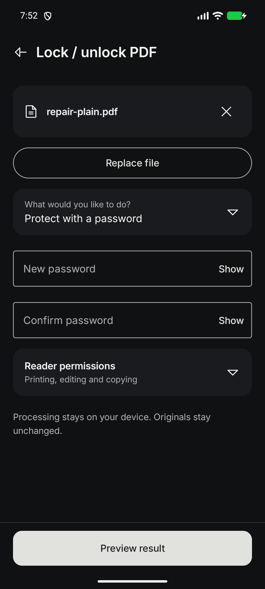
Protect PDF
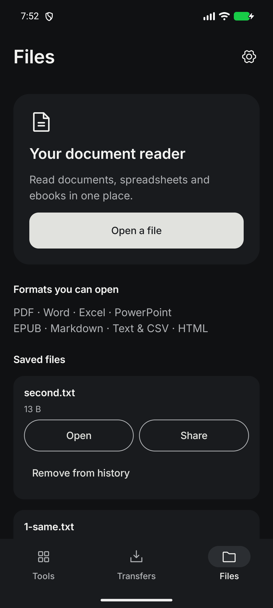
Files and reader
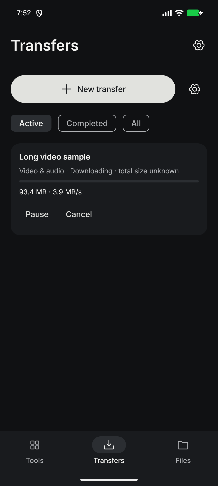
Transfer progress
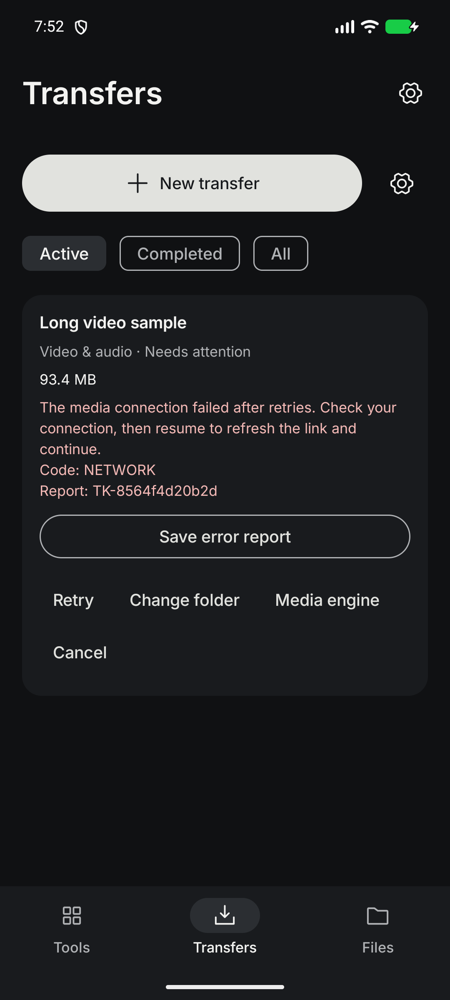
Retry and recovery
320dp width, 1.3× font setting
Controls can scroll into view; actions wrap rather than compressing labels into narrow columns.
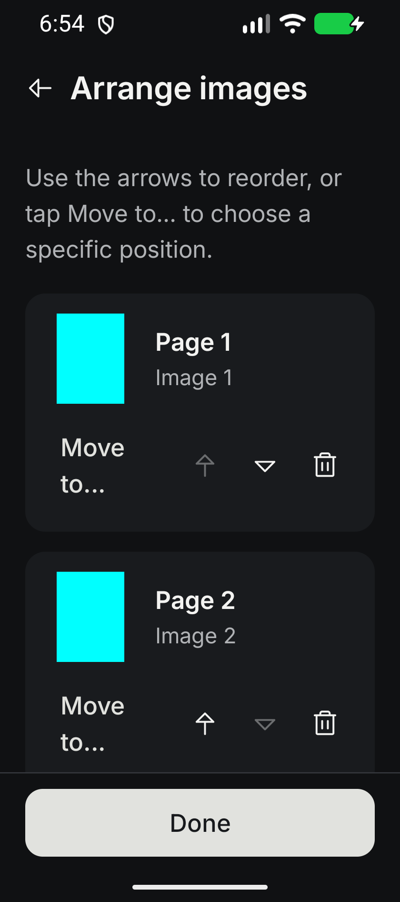
Arrange images
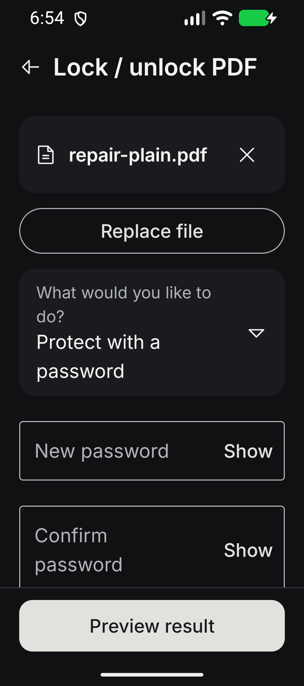
Protect PDF
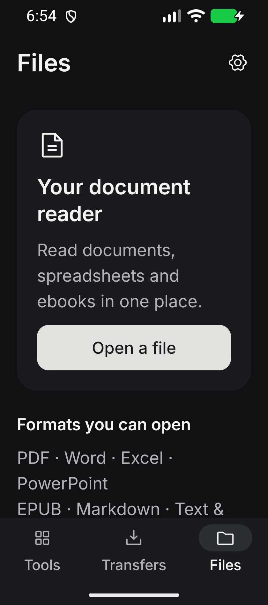
Open a file
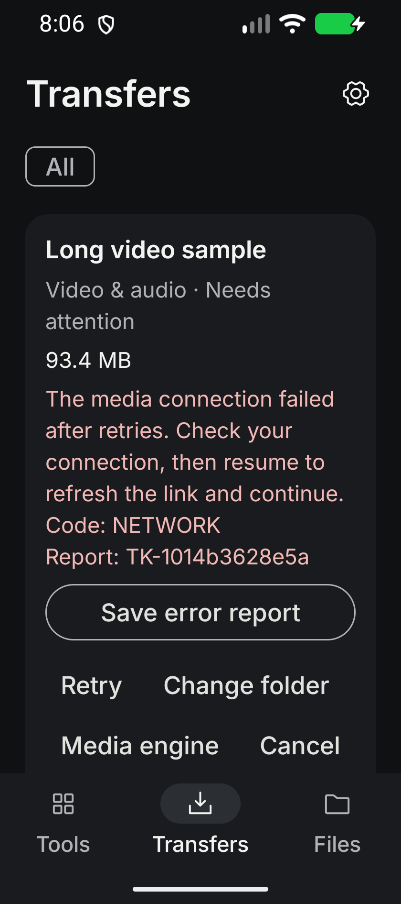
Error report; scroll for recovery actions
See the repair report for test outcomes and remaining YouTube/physical-device validation limits.